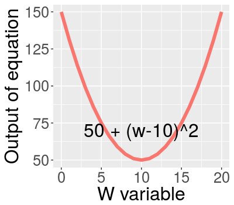

Regression Module 2
Ahsan Ijaz
Ebryx
Residual sum of squares (cost function)
Fitting of best Line

Minimizing RSS
\[ \min_{w_0,w_1}\sum_{i=1}^{N}(y_i - [w_0 + w_{1}x_i])^2 \] Finding minimum of a sample equation with respect to w: \[ y = 50 + (w-10)^2 \]

Gradient Descent
Minimizing a sample equation: \[y = 50 + (w-10)^2 \]
First Derivative:
\[ \frac{d(y)}{dw} = 2(w-10) \]
Example of varying parameter and gradient in RStudio
library(manipulate)
RSSmin <- function(W_v){
w = seq(0,20)
parabola = data.frame(input = w, parabola = 50 + (w-10)^2, derivative = 2*(w-10))
ggplot(data = parabola, aes(x=input, y=parabola,color = "red")) +
guides(colour=FALSE) +
geom_line(size = 2) +
xlab("W variable") + ylab("Output of equation") +
theme(text = element_text(size=23),
plot.title = element_text(size = rel(1))) +
annotate("text", x = 10, y = 25, label = paste("2*(w-10) =",
as.character(2*(W_v-10))), size = 6) +
annotate("text", x = 10, y = 100, label = paste("RSS = ",
as.character(50+(W_v-10)^2)), size = 6)
}
manipulate(RSSmin(W_v), W_v = slider(-5, 15, step = 0.5))
Gradient Descent
\[ w_i = w_{i-1} - \zeta\times{}\nabla(\color{blue}{\textit{RSS}}) \]
Remember from before that RSS is given by:
\[\textit{RSS} = \sum_{i=1}^{N}(y_i - [\color{blue}{w_0} + \color{blue}{w_{1}}x_i])^2 \]
Taking derivative w.r.t \(w_0\) :
\[ -2\sum_{i=1}^{N}(y_i - [w_0 + w_{1}x_i]) \]
Taking derivative w.r.t \(w_1\) :
\[ -2\sum_{i=1}^{N}(y_i - [w_0 + w_{1}x_i])x_i \]
Summarising Gradient Descent algorithm
\[ \nabla\textit{RSS}(\color{blue}{w_0},\color{blue}{w_1}) = \begin{bmatrix}-2\sum_{i=1}^{N}(y_i - [\color{blue}{w_0} + \color{blue}{w_{1}}x_i]) \\ -2\sum_{i=1}^{N}(y_i - [\color{blue}{w_0} + \color{blue}{w_{1}}x_i])x_i \end{bmatrix} \]
While not congverged:
\[ \begin{bmatrix}w_0^{(t+1)} \\ w_1^{(t+1)} \end{bmatrix} = \begin{bmatrix}w_0^{(t)} \\ w_1^{(t)} \end{bmatrix} - \color{blue}{\nabla\textit{RSS}(w_0^{(t)},w_1^{(t)})} \]
Convergence condition?
When \(\nabla\textit{RSS} \leq \epsilon\).
Discussion on learning Rate
\[ w_i = w_{i-1} - \color{blue}{\zeta}\times{}\nabla(\textit{RSS}) \]
- A smaller value of learning rate = Too slow convergence rate
- Too large a value = Convergence might never happen.
- Decaying learning rate! $\zeta_n = \frac{\zeta_o}{t} $